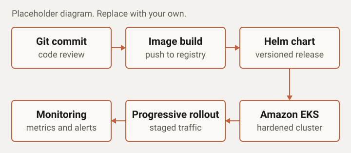

Case study
EKS Deployment Reliability
Context
A mid-size platform team running containerized services on Amazon EKS and releasing to production on a weekly schedule.
Problem
Deployments were fragile. A bad release reached all users at once, and limited observability meant the team often learned about problems late and spent too long working out the cause.
What I did
- Reviewed and corrected the EKS configuration, including resource requests and limits, health probes, and autoscaling.
- Standardized the container workflow: consistent Docker builds with images tagged by commit and pushed to a registry.
- Packaged services as versioned Helm charts, so each release was repeatable and could be rolled back to a known version.
- Set up monitoring and alerts on the signals that matter during a release: error rate, latency, and pod health.
- Introduced a progressive rollout strategy, sending new versions to a small share of traffic before a full release.
- Documented the release and rollback process for the team.
Architecture

Result
Releases became more predictable, and the team could see how a release was behaving while it rolled out.
- Time to detect a bad release: seconds to a few minutes, through Kubernetes health probes.
- Bad releases caught and rolled back: around 5 a month.
Stack used
- Amazon EKS
- Kubernetes
- Docker
- Helm
- Monitoring and alerting
- Progressive delivery